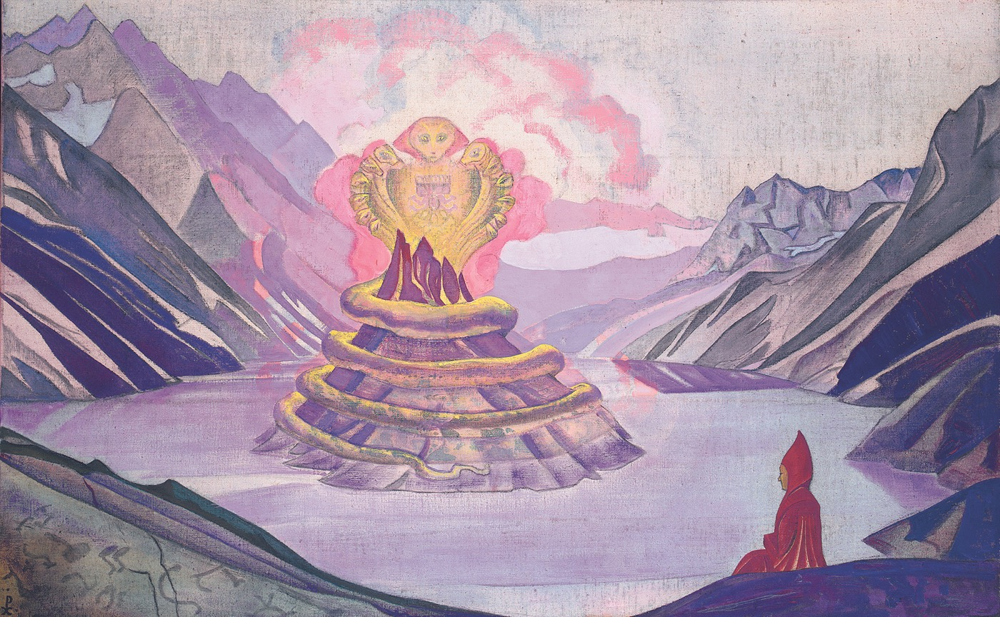

01 Summary
Nagarjuna, in plain English
Nagarjuna argues that suffering could never end if it had a fixed nature. Something that existed entirely on its own would be beyond the reach of anything that might change it. Buddhist practice makes sense, he says, because suffering depends on conditions.
He calls this absence of a fixed, independent nature emptiness. He applies the idea to people, physical things, and even the Buddhist teachings.
This reading follows selected arguments from the Mulamadhyamakakarika, or Root verses on the Middle Way, shortened to MMK. The everyday examples are added here.
The opening argument: MMK 24.20 to 24.
02 Expand the concepts
Seven steps through the argument
01What empty meansMMK 15
The Sanskrit word shunyata means emptiness. What is missing is svabhava, usually translated as intrinsic nature or inherent existence. In the sense Nagarjuna attacks, this would be a nature that something has independently of anything else.
A ceramic cup depends on clay, firing, and its shape. We identify it through a use: drinking. Calling it empty means it lacks an independent nature that makes it a cup all by itself. It can still hold your coffee.
In chapter 15, he argues that a nature produced by causes and conditions is something made. Svabhava, as he defines it, would have to be unmade and independent. A nature supplied by something else fails that definition.
Why define intrinsic nature so strictly? Some of his Buddhist opponents accepted that things were caused while still saying they had their own natures. Nagarjuna disputes whether those two claims fit together. His argument needs more than the observation that cups have causes.
02Dependence and emptinessMMK 24
Dependent arising is the Buddhist teaching that things occur in dependence on conditions. It predates Nagarjuna. In an early discourse, the Buddha explains how ignorance, craving, and clinging contribute to suffering, and how their cessation brings that suffering to an end.
Nagarjuna uses dependence more broadly. A thing can depend on causes, on parts, or on how it is identified. Consider a teacher: someone is a teacher in relation to students and teaching. The role cannot be established by considering that person alone.
Verse 24.18 brings dependence and emptiness together:
That which is dependent originationIs explained to be emptiness.That, being a dependent designation,Is itself the middle way.
Nagarjuna, MMK 24.18, translated by Jay L. Garfield
The first two lines connect dependence with the absence of an independent nature. The third adds that even the description depends on what is described. Calling something a cup relies on its shape, material, and use. The name alone cannot make it hold coffee.
The last line calls this the middle way. We can acknowledge that things function while rejecting the claim that they exist independently. This avoids both giving things an independent existence and denying that anything happens.
The earlier teaching; MMK 24.18 to 19; the broader use of dependence.
03How he examines a causeMMK 1
The MMK begins by examining how anything could arise. A seed grows into a sprout under suitable conditions. If the seed and sprout each had an independent nature, how could one produce the other?
Verse 1.1 lists four possibilities. The arguments around them can be compressed like this:
- From itself. If the effect already exists in the cause as that very thing, producing it adds nothing. The sprout would already be there.
- From something wholly other. If cause and effect are independent in their natures, their connection becomes unexplained. Why would this seed produce this sprout rather than anything else?
- From both. Combining the first two proposals carries their difficulties with it.
- Without a cause. This gives no account of why sprouts appear under particular conditions.
The second possibility is the difficult one. A seed and a sprout are plainly different. The issue is whether they can be different in a way that makes them independent of the relation between them. Calling the seed a cause already refers to what it produces. This does not mean the sprout reaches backward in time to create the seed.
He takes a claim and asks whether its alternatives work on its own assumptions. In the common reading, ordinary growth remains possible; what fails is the explanation through independent natures. Some scholars read his denials more broadly, as discussed below.
MMK 1.1 and the opening chapter; the dispute about what his denials cover.
04What this says about youMMK 18
An earlier Buddhist discourse examines five kinds of experience: bodily form, feeling, perception, mental formations, and consciousness. These are called the five aggregates. Each changes and escapes our complete control. The discourse rejects treating them as a permanent self.
In MMK 18.1, Nagarjuna asks whether the self is identical with these aggregates or separate from them. If it is identical, it arises and passes away as they do. That cannot give us an unchanging self. If it is separate, it lacks their characteristics. What makes it the self of this particular experience?
Evidence for a separate, permanent owner might be a memory, a feeling, or an act of attention. Each belongs to the changing experience the owner was supposed to be separate from. What grounds the claim to an extra owner?
A person can make a promise and be held responsible without possessing that permanent owner. What you do now affects what happens later. Continuity does not require an unchanged substance to pass through every moment.
The five aggregates and MMK 18.1 to 2; conventional existence.
05Do actions still matter?MMK 24
Chapter 24 opens with an objection: if everything is empty, there can be no arising or ceasing, and therefore no suffering to understand or end. The Buddhist path would collapse. Nagarjuna answers that this misunderstands emptiness.
He distinguishes conventional truth from ultimate truth. Conventionally, the cup holds coffee, a person makes a promise, and actions have consequences. In the reading followed here, ultimate analysis finds no independent nature in those things.
Finding that a cup depends on its material and shape does not contradict the claim that it holds coffee. It contradicts the further claim that the cup is established entirely by itself.
Conventional truth leaves room for mistakes. Saying the cup is on the table can be true; saying it is there when the table is bare can be false. Emptiness does not make both statements accurate.
Verse 24.10 says the ultimate cannot be taught without relying on convention. The explanation itself relies on shared words and ways of reasoning.
06Emptiness is empty tooMMK 13
Emptiness can sound like a final substance underneath everything. But if everything were made from an independently existing Emptiness, the argument would have restored what it rejected.
Emptiness always concerns something: the cup's lack of an independent nature, or the person's lack of an independent self. It depends on what is being examined. Verse 24.18 calls it a dependent designation.
In 13.8, Nagarjuna warns against making emptiness itself into a fixed view. On this interpretation, understanding emptiness includes recognizing that it cannot supply a new independent foundation. Relations cannot supply one either: a relation depends on what is related.
07Why suffering can endMMK 24, 25
The Buddhist background is the Four Noble Truths: suffering is to be understood, its origin in craving abandoned, its cessation realized, and the path to that cessation developed. This concerns the wider condition of a life subject to aging, loss, and death. In its traditional setting it also concerns rebirth.
Nagarjuna's answer to the objection in chapter 24 is that a fixed nature would make this practice impossible. Suffering could not arise through conditions if it existed independently of them. It could not cease through changing conditions either. Someone ignorant by an unchangeable nature could never learn.
Emptiness allows the change the path requires. Understanding the argument is also different from realizing emptiness in Buddhist practice: being convinced does not by itself end the habits that produce suffering.
Chapter 18 connects liberation with the ending of clinging to a self and to what belongs to it. An everyday example is turning a mistake into a verdict about who you permanently are. Recognizing how it arose leaves room to take responsibility and change. That illustrates a habit of thinking; it does not establish the Buddhist claim of liberation.
Chapter 25 extends the analysis to nirvana, liberation from suffering and rebirth. It denies a distinction between nirvana and samsara, the cycle of suffering and rebirth. In the common Madhyamaka reading, both lack an independent nature. Liberation cannot be a separate, self-existing reality exempt from emptiness.
Suffering and its cessation still differ in Buddhist practice. The verse offers no reason to stop helping someone. How to explain the relation between samsara and nirvana remains disputed.
The Four Noble Truths; MMK 24.20 to 26; 18.2 to 5; 25.19 to 20; understanding and realization.
03 Context
What we know about Nagarjuna
Nagarjuna was an Indian Buddhist monk, usually placed around 150 to 250 CE, probably in southern India. The details of his life are uncertain. Later accounts include encounters with nagas, serpent beings said to guard Buddhist scriptures. Those are religious legends, rather than established biography.
His work helped establish Madhyamaka, the Middle Way school of Mahayana Buddhism. The MMK examines causation, motion, time, the self, and nirvana across 27 chapters. Other philosophical works are also generally attributed to him, including the Vigrahavyavartani, or Dispeller of disputes.
Part of his dispute was with other Buddhists. Some schools treated everyday objects and persons as dependent combinations while giving the basic elements of experience, called dharmas, a more fundamental status. Nagarjuna challenges that stopping point. Breaking the cup into smaller components does not settle whether those components have an independent nature.
The disagreement remains. The explanations above follow the reading that preserves conventional existence while denying intrinsic existence. Jackson Cole Macor argues that this gives the two truths too much work to do and makes Nagarjuna more constructive than the text warrants. This post follows one interpretation; the dispute is real.
Life and works; the Buddhist dispute; a competing interpretation.

Text and sources
The quotation follows Jay L. Garfield's chapter 24 reprint linked below. The explanations are paraphrases. References give chapter and verse: 24.18 is chapter 24, verse 18.
- Garfield's chapter 24 translation and introduction, a scan on the translator's website. The source for the quotation and chapter 24 discussion.
- The MMK Sanskrit text at GRETIL. References checked here include 13.8 and 15.1 to 2.
- Mark Siderits and Shoryu Katsura, chapter 1 of Nagarjuna's Middle Way (2013). The publisher's preview includes commentary.
- SN 12.15, the discourse to Kaccayana, translated by Thanissaro Bhikkhu. An earlier account, referred to in MMK 15.7.
- SN 22.59, on the aggregates and not-self, translated by Thanissaro Bhikkhu; Stephen Batchelor's literal MMK translation for chapter 18.
- Sonam Thakchoe, The theory of two truths in India, especially the Madhyamaka discussion.
- SN 56.11, on the Four Noble Truths, translated by Thanissaro Bhikkhu.
- Richard Hayes, Madhyamaka, on the school's interpretations of emptiness and liberation. MMK 25.19 to 20 can also be located in the linked Sanskrit text.
- Jan Westerhoff, Nagarjuna, on biography, attributed works, and the meaning of svabhava.
- Noa Ronkin, Abhidharma, on dharmas and intrinsic nature. Svabhava does not mean an independent substance in every school.
- Jackson Cole Macor, Not even absent: Dependent origination, emptiness, and the two truths in the thought of Nagarjuna (2024). A scholarly argument against the conventional reading used in this post.
For a full reading, Garfield's The Fundamental Wisdom of the Middle Way (1995) supplies translation and commentary. Siderits and Katsura's edition translates from Sanskrit and draws on early Indian commentaries. Their commentaries differ. The verses alone do not settle every question raised here.